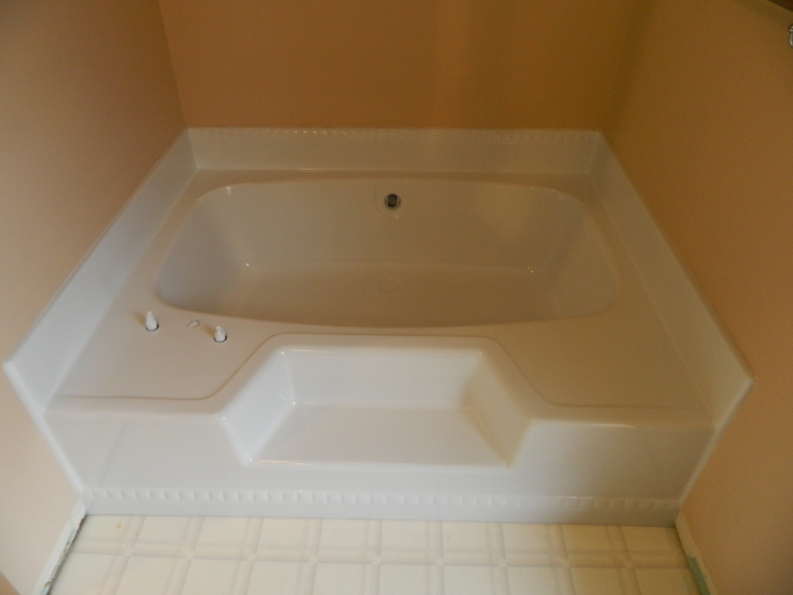
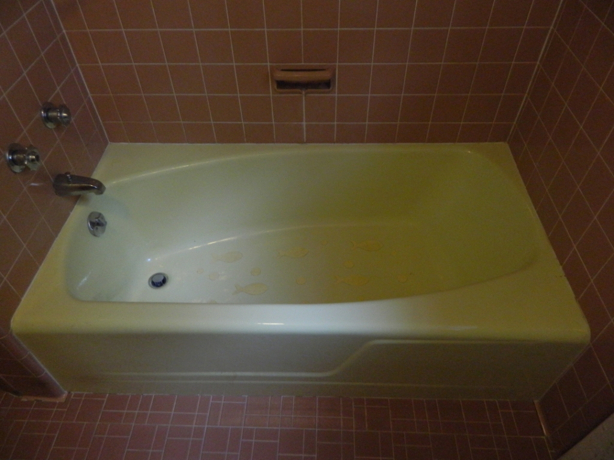
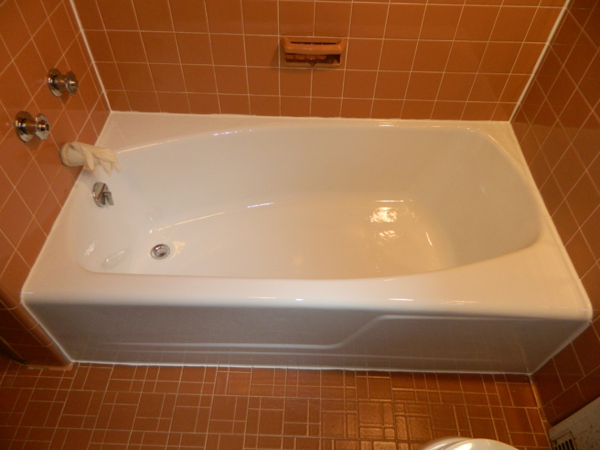
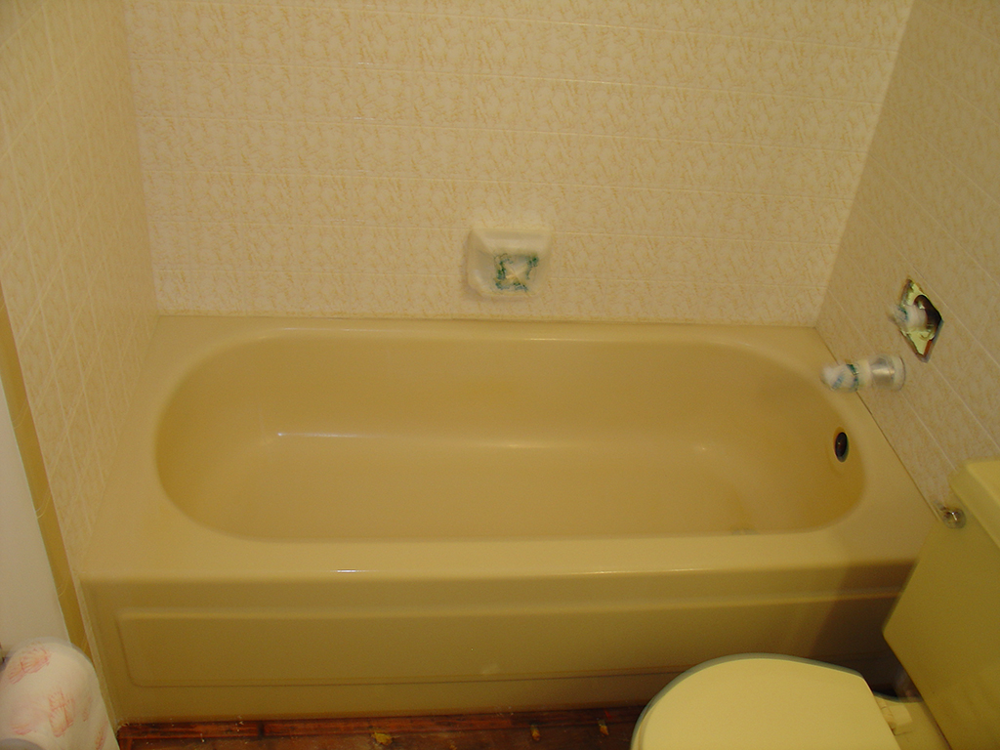
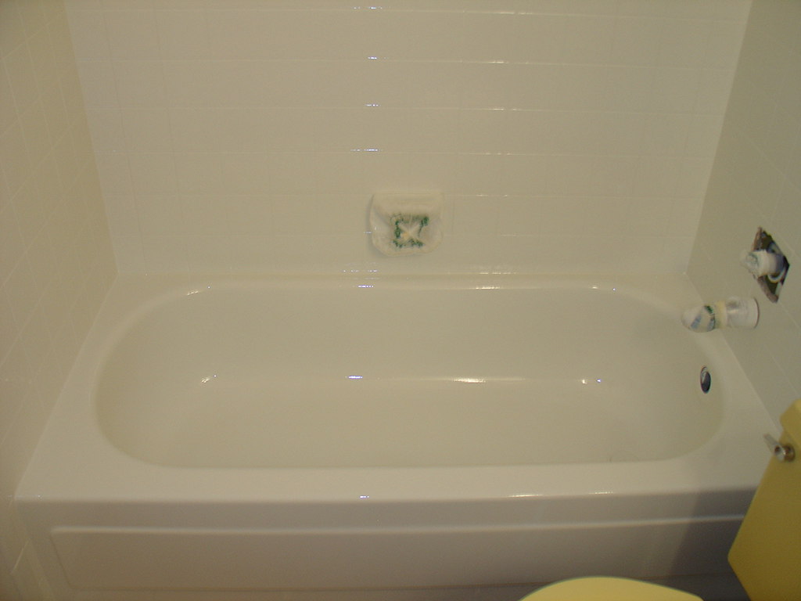
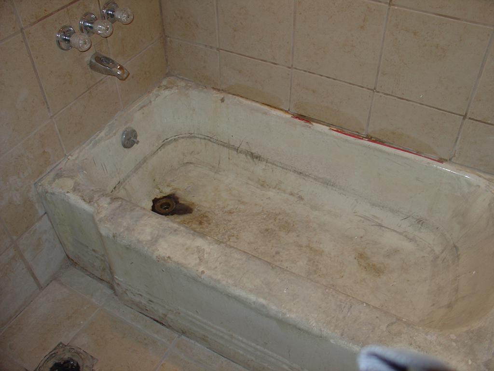
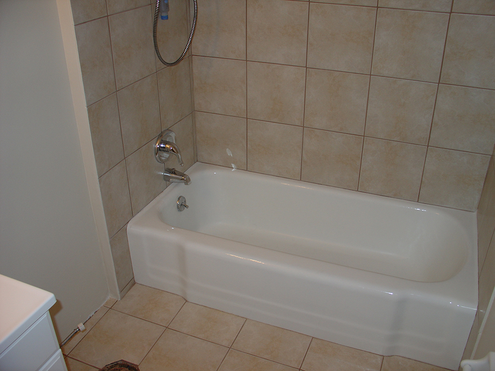
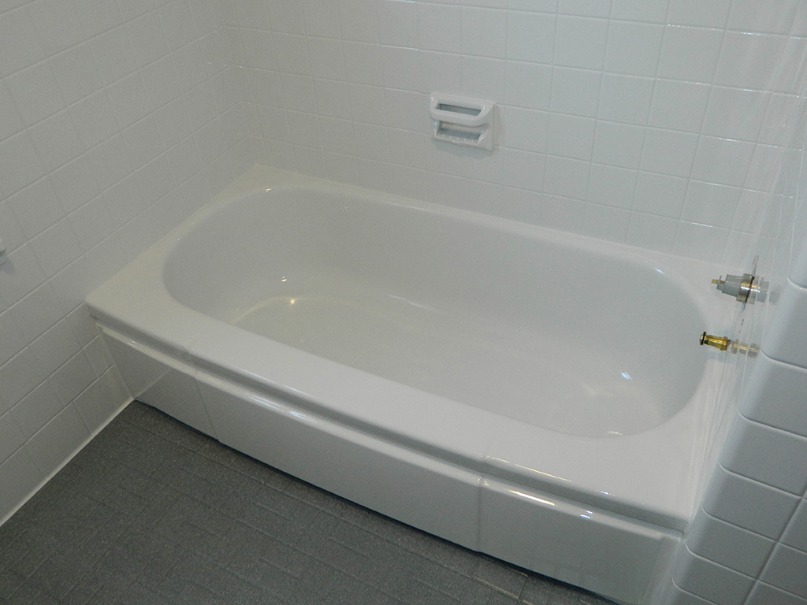

Bañeras y Jacuzzis
Reparación y restauración de bañeras de porcelana, fiberglass y jacuzzis de todos los tamaños.
REPARACIÓN Y RESTAURACIÓN DE BAÑERAS Y JACUZZIS
Estimados con Sr. Frank Cruz
Reparación y restauración de bañeras de porcelana, fiberglass y jacuzzis de todos los tamaños.
Años de experiencia combinada



Somos especialistas en reparación y restauración de bañeras de porcelana y fiberglass. También trabajamos jacuzzis de diferentes tamaños y condiciones.
Por una fracción del costo de arrancar e instalar una bañera nueva, nuestro servicio brinda una manera rápida y económica para que tu bañera luzca moderna sin una remodelación completa del baño.
Podemos igualar el color existente o aplicar el color de tu preferencia, según la condición de la superficie y el tipo de trabajo.
Para estimados, llama al Sr. Frank Cruz: (787) 602-2993
El objetivo es extender la vida útil de tu bañera o jacuzzi de forma práctica, limpia y económica. La restauración puede añadir años de uso cuando la estructura existente está en buenas condiciones.
Si buscas evitar el costo de una remodelación completa, envía tus fotos o llama al Sr. Cruz para una orientación inicial.
SOLICITE INFORMACIÓN


ANTESDESPUÉS

ANTESDESPUÉSLa restauración es el proceso de renovar una superficie existente mediante un acabado profesional. Para muchos clientes, es la forma más rápida y económica de modernizar el baño sin remover la bañera.
Arrancar e instalar una bañera nueva puede implicar demolición, plomería, azulejos, escombros y varios días de trabajo. Restaurar la bañera existente puede evitar ese gasto cuando la estructura está en condiciones razonables.
Las bañeras restauradas lucen limpias, modernas y brillantes. Con buen cuidado, la apariencia puede mantenerse por años.
¿Cuánto tarda?
Depende de la complejidad y condición de la superficie.
¿Queda limpio?
El trabajo se realiza protegiendo el área y minimizando el desorden.
Además de restaurar la superficie, se puede trabajar con igualación de color o cambio de color cuando el proyecto lo permite. La preparación correcta es la diferencia entre un trabajo barato y un resultado serio.
IMPORTANTE
Para extender la vida del acabado, sigue estas recomendaciones básicas.
Usa limpiadores suaves y esponjas no abrasivas.
Seca la superficie después del uso cuando sea posible.
No coloques objetos pesados o filosos sobre el acabado.

Es la restauración profesional de una bañera o superficie existente sin removerla.
Depende del tamaño, condición y tipo de superficie. En general, la restauración cuesta una fracción de remover e instalar una bañera nueva.
El tiempo depende del material y condiciones del baño. Se dan instrucciones específicas después del trabajo.
Sí. Enviar fotos claras ayuda a dar una orientación inicial más rápida. También puedes llamar directamente al Sr. Cruz al (787) 602-2993.
Trabajamos bañeras, jacuzzis, porcelana y fiberglass con enfoque en una solución económica frente al reemplazo completo.